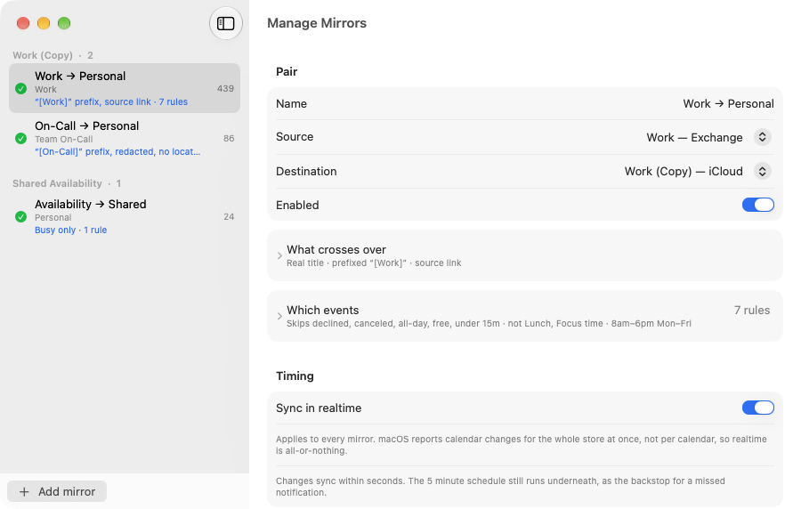
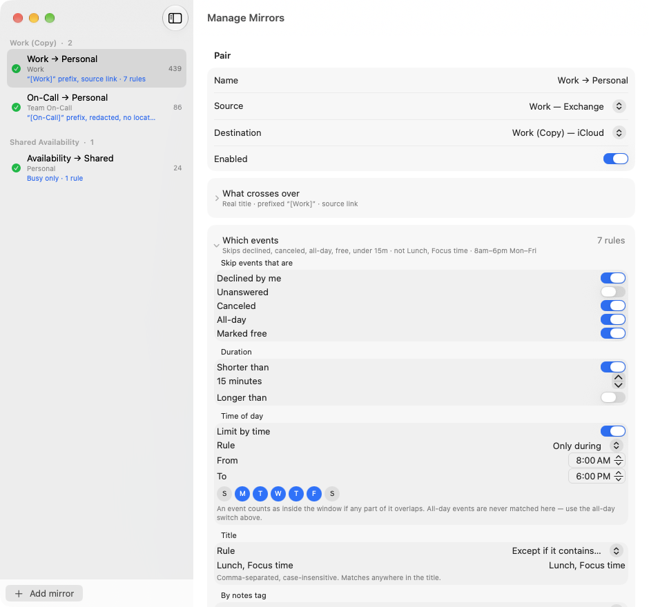
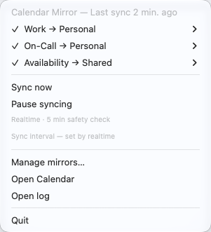
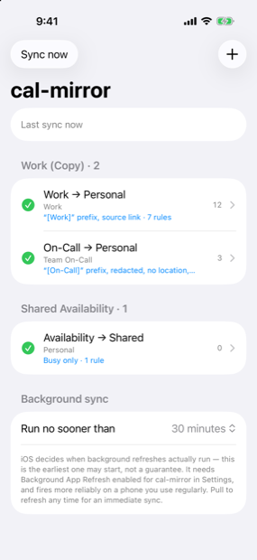
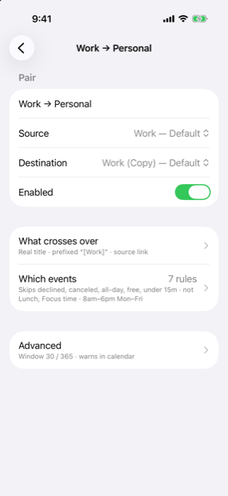

Point Calendar Mirror at a calendar you can see but can't share — a work schedule, a subscribed feed — and it keeps an up-to-date copy in a calendar you control. It only copies one way, so your original is never touched.

Some calendars you can see but not share: a subscribed work schedule, a read-only team calendar, an account that isn't yours. Calendar Mirror copies one into a calendar you own — so you can reshare it, recolor it, or just see it beside everything else. And because the copy lives in your own account, it shows up on your phone and other devices on its own.
Copy from one calendar into another, and set up as many pairs as you want.
The copy follows the original. Your original is never changed — and anything you add to the copy by hand stays put.
Weekly meetings, all-day events, the odd moved appointment — they all come across correctly.
It works through the calendars already set up on your device. Nothing to log into, nothing stored.
On Mac it sits in the menu bar — see that it's working, update now, or pause, all from a small icon up top. On iPhone and iPad it's the app itself.
Pick how often it updates and forget about it. On Mac it keeps to the schedule. On iPhone and iPad it refreshes in the background when iOS allows, and a pull down updates it right now.
Not every event in a calendar is worth mirroring. A pair can skip the ones you declined, the ones you haven't answered, the ones the organiser cancelled, all-day events, and anything marked free — then narrow it further by length, by words in the title, and by a window of the day on the weekdays you choose.
This works on calendars you don't control. Tagging events one by one only works on events you wrote yourself — a subscribed work feed or an assigned-shifts calendar can only be filtered on what the events already say about themselves.

A meeting you said no to isn't a commitment. Neither is one the organiser called off. Both can be dropped before they reach the copy.
Skip anything under fifteen minutes, or over eight hours. Useful for stripping out reminders and week-long placeholders.
Copy only what falls between 8am and 6pm, Monday to Friday. An event counts if any part of it overlaps, so a 7am start still comes through.
A working pair writes nothing into your calendar at all. If one stops syncing, an all-day warning turns up in the destination — so you find out on your phone, without opening anything. It clears itself as soon as the pair recovers.
Older versions left a daily “last synced” note instead. On a calendar you share with other people, that was a marker all of them could see and none of them could use.

The icon says how things are going: a check when every copy is current, a warning if one has fallen behind, a cross if something is broken, a pause symbol when you've stopped it.
To add a copy, open the window and pick two calendars from your own list — the one to copy from, and the one to copy into (only calendars you can edit show up as the target).
Each pair opens onto its own settings, and every section folds down to a line that says what it’s set to, so a heavily-configured pair still reads at a glance.
Not a generic checkmark — Calendar Mirror’s own icon, redrawn small enough to stay sharp at menu-bar size, wearing whichever face matches what’s happening.
Instead of waiting for the next scheduled run, Calendar Mirror can watch for calendar changes and update the copy within seconds of one. A five-minute pass still runs underneath as a backstop — change notifications are best-effort, and it also repairs anything that got deleted by hand.
Move a meeting and the copy follows almost immediately, rather than at the top of the next quarter hour.
Realtime is a macOS feature. iPhone and iPad keep to their background schedules, because iOS decides when an app may run. On the Mac App Store app it arrives in 1.4.2; the build-from-source version has it today.
Calendar Mirror writes the copy fast. How quickly that copy reaches your other devices is iCloud’s business, on iCloud’s schedule.
The iPhone and iPad app shows every pair grouped by the calendar it copies into, with its health and how many events it’s managing. Pull down to sync right now; tap a pair to change what it copies.


Choose the one to copy from and the one to copy into — both already on your device.
Every event comes across, and the copy keeps matching the original as things change — one direction only.
Since the copy lives in your account, it reaches your phone and other devices by itself.
Thirteen other tools do some of what Calendar Mirror does. If you already subscribe to Fantastical, start with the mirroring you have already paid for — that page says so first.
Some of them can’t read an iCloud calendar at all. If one of those is what you want, Calendar Mirror can mirror your iCloud calendar into a Google calendar it can read, and the pages below walk through the setup.
Every price checked against that company’s own site, dated, and linked.
One purchase — $2.99 — covers iPhone, iPad and Mac. It keeps the lights on for an app with no ads, no accounts, and no data collection. The source is open either way.
Prefer to build it from source? It's free and MIT-licensed.
The open-source project is called
cal-mirror; on the App Store it's Calendar Mirror. Same app, same
engine — the shorter name is just what the repository has always been called.
git clone https://github.com/mattbaylor/cal-mirror.git
cd cal-mirror
./install.sh